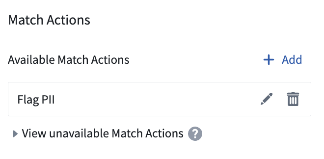
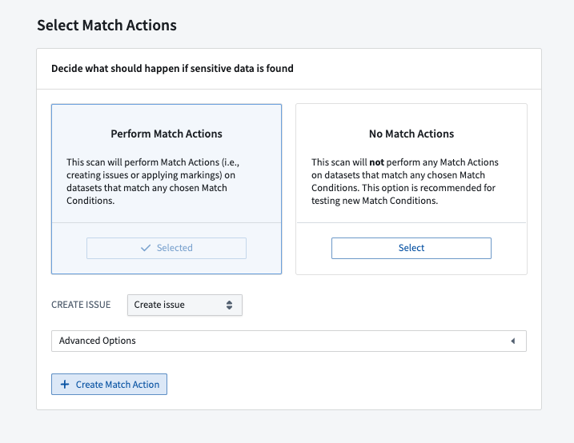
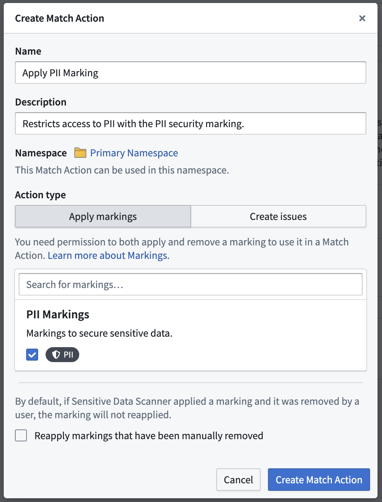
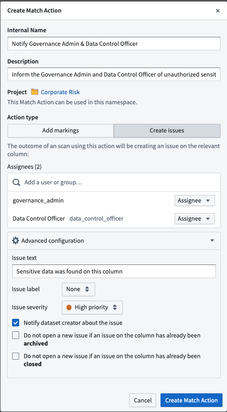
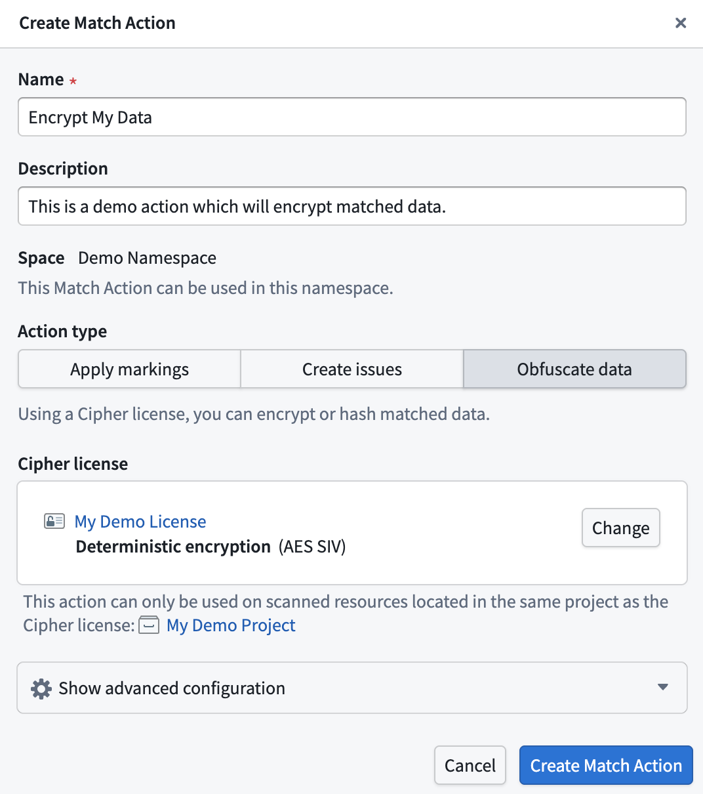
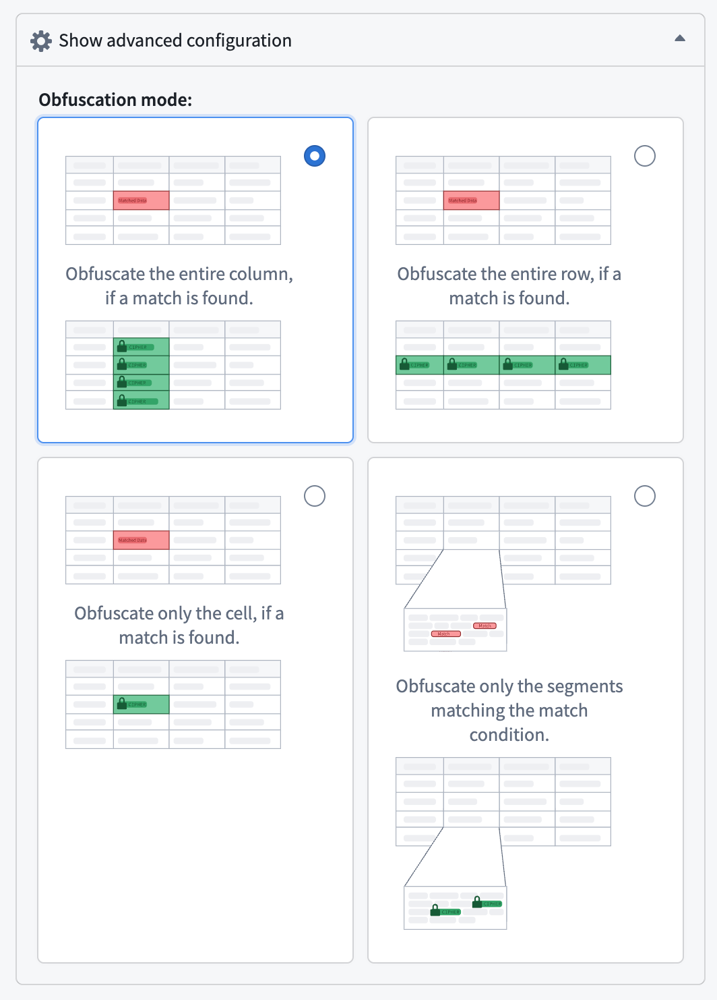

Match actions allow Sensitive Data Scanner to perform an automatic action on your behalf on a dataset that is detected as a match. There are three types of match actions:
:::callout{theme="warning" title="Test your match conditions"} If your sensitive data scan covers a large number of datasets, we recommend that you test the match conditions before proceeding further since misconfigured match conditions can produce false positives in the form of unwanted issues or Markings on datasets.
You can test the match conditions by selecting No Match Actions for your scan. Once you have verified that the match condition matches the expected format of data, you can then select one of the other Match actions for future one-time scans or Recurring Scans. :::
Similar to creating match conditions, there are two ways to start creating match actions â either from the Sensitive Data Scanner landing page, or while creating a sensitive data scan.
From the landing page, select Add above the Available match actions listed in the match actions sidebar.

While creating a sensitive data scan, on the Select match actions page, you can also create a match action by clicking Create match action and immediately use that in your scan.

Both of these starting points open the same match action creation process. From there you can choose whether to create an Add markings match action, or a Create issues match action.
This is an example of the creation process for an "Apply markings" match action. In this example, the PII Marking will be applied on matching datasets.
Additionally, the Reapply markings that have been manually removed option is unselected, meaning that if the marking was previously applied by Sensitive Data Scanner (for example, during a previous scan), and was manually removed by the user, the marking will not be re-applied. Enabling the option allows the marking to be re-applied.

This is an example of the creation process for a Create issues match action. Here, you will notice that two users have been selected as Assignees of the issues that Sensitive Data Scanner will create upon highlighting a match â âGovernance adminâ and âData control officerâ.
Additionally, there are advanced configurations available for âCreate Issuesâ match actions:

Obfuscate Data Match Actions allow you to automatically encrypt or hash matched data using Cipher. For each scanned resource, Sensitive Data Scanner will create an output dataset containing the obfuscated data.
To create a new Obfuscate Data Match Action, you can open the Create Match Action dialog and select Obfuscate data.
You will need a Cipher Channel and a Cipher License. If you do not have those already, you can create them in Cipher.
The Cipher Channel specifies the cryptographic algorithm used for the obfuscation. Sensitive Data Scanner supports:
Note that Visual obfuscation channels are not supported in Sensitive Data Scanner.
A Cipher License grants a set of permissions to interact with a Cipher channel. Sensitive Data Scanner requires an Admin License, as it requires cryptographic key access to perform the obfuscation.
Once you made sure you have a Cipher License available, you can select it in the Create Match Action dialog.

The Match Action can only be applied on scanned resources that are located in the same project as the Cipher license.
:::callout{theme="warning"} An Obfuscate Data Action will create an output dataset for every scanned dataset. Depending on the number of scanned resources, this can lead to a large amount of created output datasets. We recommend running this scan on a small amount of data.
Obfuscate Data Actions are not reversible through the Sensitive Data Scanner. Any datasets created by Sensitive Data Scanner must be deleted manually. :::
Select the Show advanced configuration panel to expand a set of four different options to customize the obfuscation mode. This defines what specific data will be obfuscated in case of a match:
